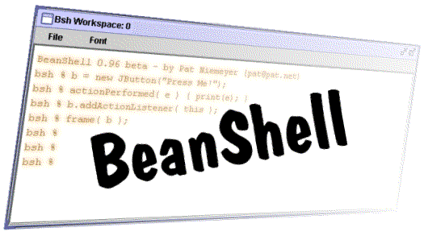

Lightweight Scripting for Java
BeanShell on Maven Central
BeanShell 2.1.1 and 3.0.0RC2 are on Maven Central asio.github.beanshell:bsh. See the
Downloads page for details.

io.github.beanshell:bsh. See the
Downloads page for details.